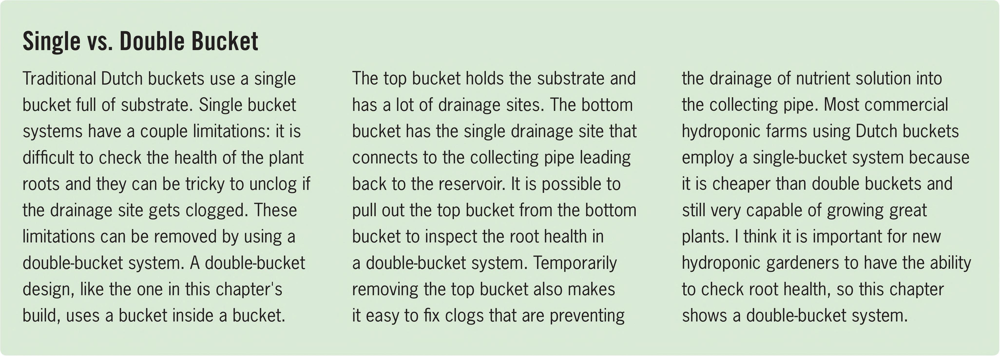

Single vs. Double Bucket Traditional Dutch buckets use a single bucket full of substrate. Single bucket systems have a couple limitations: it is difficult to check the health of the plant roots and they can be tricky to unclog if the drainage site gets clogged. These limitations can be removed by using a double-bucket system. A double-bucket design, like the one in this chapter's build, uses a bucket inside a bucket. The top bucket holds the substrate and has a lot of drainage sites. The bottom bucket has the single drainage site that connects to the collecting pipe leading back to the reservoir. It is possible to pull out the top bucket from the bottom bucket to inspect the root health in a double-bucket system. Temporarily removing the top bucket also makes it easy to fix clogs that are preventing the drainage of nutrient solution into the collecting pipe. Most commercial hydroponic farms using Dutch buckets employ a single-bucket system because it is cheaper than double buckets and still very capable of growing great plants. I think it is important for new hydroponic gardeners to have the ability to check root health, so this chapter shows a double-bucket system. CROPS Dutch buckets are commonly used for large flowering crops like hops, tomatoes, peppers, cucumbers, and eggplant. Many of these large crops can be grown for a year or more in a Dutch bucket. Leafy greens and herbs can be grown in Dutch buckets, but most hydroponic gardeners prefer to take full advantage of their buckets by growing large flowering crops. LOCATIONS Dutch bucket gardens are typically outdoors or in greenhouses because the crops can get huge. Many gardeners using Dutch buckets install a trellis system next to the buckets so plant growth can be directed upward and managed in a spaceefficient manner. Using Dutch buckets indoors is an option, but the growth needs to be managed in a way that makes efficient use of grow lights. Some grow lights can be installed vertically to light a vertically trellised crop. Most indoor gardeners set up a horizontal trellis and weave the plant growth horizontally to create an even height canopy. A nice level canopy is great for grow lights because it creates minimal shading of other plants and maximizes the use of light. 84 DIY HYDROPONIC GARDENS
